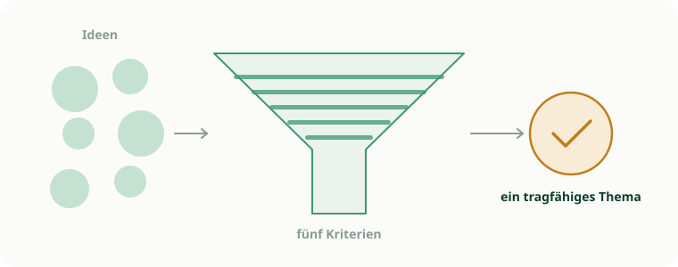

Hilfestellung · Vormittag
Ein Thema fürs KI-Ping-Pong finden
Ein kurzes Rezept und vier fertige Beispiele, alle ohne Foto, alle rein über Text.
Die eigentliche Hürde
Am Vormittag scheitert es selten an der Technik, sondern an der Frage: Welches Thema passt überhaupt? Der Bot liest nur Text. Alles, dessen Kern eine Zeichnung oder ein Foto ist, fällt damit weg. Ärgerlich, aber es bleibt mehr übrig, als man im ersten Moment denkt. Die fünf Fragen unten klären das in einer Minute.

Fünf Fragen an euer Thema
Könnt ihr alle fünf mit Ja beantworten, könnt ihr loslegen.
- 1
Text von selbst
Entsteht das Schülerprodukt von selbst als Text, ohne dass eine Skizze oder ein Foto nötig ist?
- 2
Klare Kriterien
Gibt es Kriterien oder Operatoren, an denen der Bot sein Feedback festmachen kann?
- 3
Verbesserbar
Lässt sich das Produkt verbessern? Gibt es also besser und schlechter, nicht bloß richtig und falsch?
- 4
Denken, nicht abrufen
Muss man dafür wirklich denken, oder reicht Abrufen?
- 5
Ohne persönliche Daten
Kommt das Ganze ohne personenbezogene Daten aus?
Vier Beispiele zum Mitnehmen
Jedes lässt sich sofort einsetzen oder abwandeln. Der System-Prompt ist hier nur angerissen, die volle Bauanleitung steht im Baukasten.
Deutsch und Sprachen
- Jahrgang
- ab Klasse 9
- Thema
- Einen Argumentationsabsatz überarbeiten
- Auftrag
- These, Begründung, Beleg und einen Einwand schreiben, abgeben, am Feedback entlang nachfeilen.
- Der Bot
- prüft die Struktur. Fehlt der Beleg? Trägt die Begründung? Einen fertigen Absatz liefert er nicht.
Gesellschaftswissenschaften
- Jahrgang
- Sek I und II
- Thema
- Eine Stellungnahme aus einer Perspektive
- Auftrag
- Begründet Stellung beziehen, aus der zugewiesenen Perspektive, mit mindestens zwei Sachargumenten.
- Der Bot
- achtet auf Perspektivkonsistenz, trennt Sach- und Werturteil und prüft, ob die Argumente belegt sind oder nur behauptet.
MINT, der knifflige Fall
- Jahrgang
- Sek I und II
- Thema
- Rechenweg oder Hypothese in Worten begründen
- Auftrag
- Den Lösungsweg Schritt für Schritt in eigenen Worten erklären, nur als Text, ohne Skizze.
- Der Bot
- sucht Lücken in der Begründung und prüft Einheiten. Das Ergebnis nennt er nie.
Nebenfach und kreativ
- Jahrgang
- Sek I und II
- Thema
- Eine Analyse oder ein Dilemma in Worten
- Auftrag
- Bildwirkung oder musikalischen Verlauf in Worten beschreiben, oder zu einem Dilemma argumentieren.
- Der Bot
- prüft Fachbegriffe, trennt Beschreibung von Deutung und wiegt beide Seiten ab. Bewerten tut er nicht.